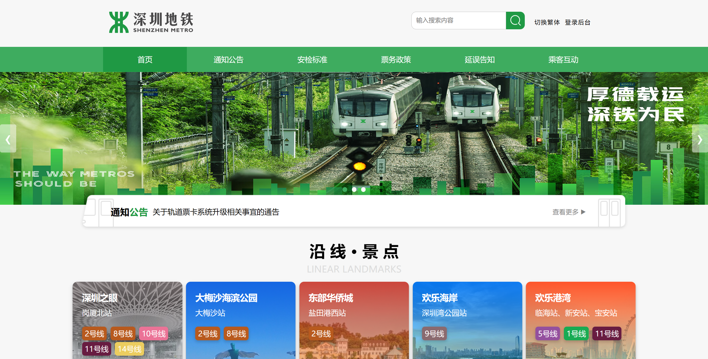

项目概述
本项目是一个面向城市轨道交通运营的数字化管理平台，旨在解决传统管理模式中存在的数据孤岛、信息整合困难、决策滞后等问题。系统采用前后端分离架构，集成多源数据，提供从乘客服务到运营管理的全流程支持，实现对客流、设备、调度等核心业务的实时监控与智能分析，助力轨道交通行业数字化转型。
核心功能
信息门户
可实时推送政策、公告、延误信息及景点推荐；提供失物招领线上登记与查询，提升找回效率；支持意见征集和留言反馈，增强乘客参与感。
数字化后台管理系统
支撑运营数字化，维护机构、人员、线路等核心数据；管理前端轮播图、公告等内容；能监控客流与设备状态，调度列车和人员，处理事件告警，生成数据分析报告。
系统管理与安全
以 JWT + 角色控制管理用户权限，记录操作日志；具备数据血缘追踪和元数据管理，保障系统稳定与数据安全。
数据中台与可视化
集成票务、业务等多源数据，按 ODS 到 ADS 层级构建数据仓库；通过可视化大屏展示热力图、客流分析等，为决策提供直观依据。
技术栈
Vue.js
前端框架
Element UI
UI 组件库
Axios
HTTP 客户端
Spring Boot
后端框架
MyBatis
ORM 框架
JWT
身份认证
MySQL 8.0
关系型数据库
Spark SQL
大数据查询引擎
Hive
数据仓库
Jetty
Web 服务器